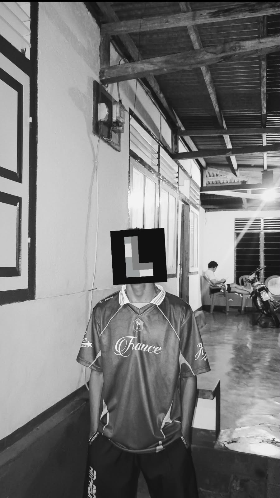

Putra Lordian L.
Content Creator & Visual Storyteller.
Visual yang bercerita.
Videographer, motion designer, dan editor. Merangkai gambar menjadi cerita yang membekas.

About Me
Di balik
lensa.
Halo, saya Putra Lordian L. Seorang siswa dari SMA Negeri 4 Maluku Tengah yang percaya bahwa setiap momen memiliki ceritanya sendiri.
Ketertarikan saya pada dunia visual dimulai dari rasa ingin tahu: bagaimana sebuah gambar diam bisa menyimpan ribuan kata, dan bagaimana potongan video bisa membuat orang merasakan emosi yang sama dengan yang saya rasakan di balik kamera.
Dari videografi, motion graphic, hingga proses editing, saya mendedikasikan waktu untuk terus belajar dan mengasah kepekaan visual. Bagi saya, karya yang baik bukan hanya tentang resolusi 4K atau transisi yang rumit, melainkan tentang kejujuran cerita yang disampaikan di dalamnya.
Di luar urusan visual, hobi saya cukup sederhana: mencoba segala hal yang bisa dicoba. Bagi saya, rasa penasaran adalah bahan bakar utama—entah itu mempelajari perangkat baru, mengeksplorasi sudut pandang yang belum pernah saya ambil, atau sekadar melangkah ke hal-hal di luar zona nyaman. Sebab dari situlah, cerita-cerita baru lahir.
Selected Work
Arsip Karya.
Contact
Mari bicara.
Punya proyek yang butuh sentuhan visual? Atau sekadar ingin berdiskusi tentang ide? Kirim pesan—saya selalu terbuka untuk cerita baru.
hello@putralordian.com →